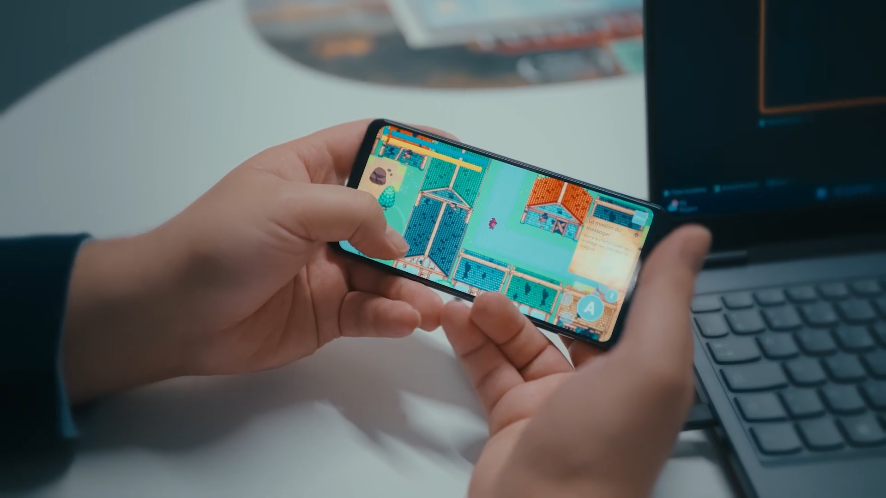

Capture d'écran du jeu

Dans le cadre de la sensibilisation au parcours de soins des grands brûlés, l'association Burns & Smiles a lancé le projet de créer un jeu éducatif visant à accompagner les victimes de brûlures (et notamment les jeunes enfants) avec l'aide d'Alten.
J'ai eu la chance de participer à ce projet dès ses prémices en tant que Game Designer puis Level Designer entre Juillet 2024 et Avril 2026, étant consultant chez Alten et en attente de mission à ce moment-là.
J'ai ainsi pu contribuer à la conceptualisation du jeu et à son scénario, avant de devenir responsable du design des cartes de l'aventure une fois le concept et les outils définis.
Afin de ne pas mélanger les parties game et level design sur lesquelles j'ai travaillé, je ne vais parler ici que de la partie game design et conceptualisation, la section sur le level design étant trouvable sur cette page.

L'objectif de ce projet est d'offrir aux jeunes enfants victimes de brûlures un média leur permettant de comprendre leur situation et les rassurer sur les épreuves qu'ils traversent.
Cette contrainte impliquait donc d'être particulièrement vigilant sur le contenu montré, le vocabulaire utilisé et les émotions provoquées.
Ce support visant également à divertir les enfants pendant leurs longues périodes en centres de soins, celui-ci doit également être ludique et intéressant, en plus d'être facilement accessible pour les soignants, c'est pourquoi l'association Burns & Smiles et Alten ont conjointement convenu d'un jeu vidéo sur mobile.
De plus, le projet étant un projet de mécénat, les coûts de production doivent être réduits au maximum, nous forçant à utiliser des outils et ressources gratuits ou à minima abordables pour l'association.

Après avoir effectué une étude de l'existant, au cours de laquelle nous avons testé de nombreux serious games afin d'identifier les codes du genre, nous avons conclu qu'un jeu dans lequel le joueur incarne un personnage auquel il peut s'identifier fonctionnait particulièrement bien, surtout si ce dernier raconte une histoire similaire à celle du joueur.
C'était notamment le cas du jeu "Lumine", un plateformer où l'on incarne un enfant atteint d'un cancer à la recherche de réponses, et parcourant des niveaux pour dissiper ses doutes, représentés sous forme de brouillard.

En ayant cette référence en tête, nous avons imaginé un jeu type JRPG-aventure basé sur le thème du papier, celui-ci permettant d'imager les notions de brûlure sans confronter trop frontalement un jeune public vulnérable à des images potentiellement anxiogènes.
Ce choix permettait également d'intégrer de nombreuses mécaniques intéressantes au gameplay (comme les origamis, collages, découpages, la série des jeux Paper Mario en étant un bon exemple), permettant également de retranscrire le jeu dans la réalité avec des ateliers manuels et des supports physiques.
Cependant, bien que ces idées aient été validées par Laurent Gaudens, président de l'association, l'absence d'assets graphiques en ligne orientés vers le papier et de graphiste dans l'équipe nous ont malheureusement forcés à abandonner cette piste.
Nous avons donc finalement opté pour un JRPG pixel art classique en 2D, avec des tuiles de 16x16 pixels, ce genre d'assets étant plutôt simples à trouver et à créer, et la gestion des déplacements et animations étant également facilitée.

Afin de construire une histoire adaptée à nos objectifs, nous avons sollicité plusieurs scénaristes bénévoles afin qu'ils puissent proposer un pitch mettant en scène un personnage et une aventure en lien direct ou indirect avec le parcours de soin des victimes de brûlures.
Parmi les propositions, "Le royaume d'Ailm" s'est rapidement démarqué. Celle-ci raconte l'histoire d'un jeune dragon blessé lors d'une éruption volcanique pendant son entraînement pour la course des dragons, lui causant la perte d'une partie de ses écailles et de l'usage de ses ailes.
Son ami, un jeune mage, est alors missionné par son maître druide pour l'accompagner à travers le royaume afin de l'aider à se soigner et de porter assistance aux autres victimes de l'éruption.
Ce scénario nous a particulièrement touchés et inspirés, car il permettait d’aborder le parcours de soin à travers une métaphore accessible, douce et adaptée à un jeune public, tout en leur permettant de s'évader dans un monde fantastique le temps du jeu.
Nous avons donc décidé de travailler en étroite collaboration avec la scénariste retenue afin de compléter le scénario et écrire les dialogues, qui seront par la suite entièrement doublés bénévolement par des comédiens français reconnus, afin de faciliter l'immersion, même pour les enfants ayant des difficultés pour lire.

Concernant les outils utilisés, nous avons décidé de développer le jeu sous Unreal Engine 5, étant un logiciel à usage gratuit dans le cadre de ce projet, et proposant les "blueprints" afin de faciliter le développement et la formation de l'équipe, puisque ce jeu était le premier de chacun des membres de l'équipe.
De plus, Unreal Engine permet également l’export vers Android, ce qui répond à notre contrainte de diffusion sur support mobile afin de rendre le jeu accessible bien plus facilement auprès des hôpitaux et centres de soins.
Pour le level design, s'agissant d'un jeu 2D, et l'éditeur de tilemap d'Unreal Engine via Paper2D étant peu pratique, nous avons décidé d'utiliser le logiciel Tiled, également gratuit, accompagné du plugin TiledIntegration pour importer les tilemaps dans UE5.

Au cours de ce projet, nous avons pu donner vie à un jeu complet, créer et imaginer une histoire à la fois inédite et adaptée à un public jeune et vulnérable, tout en suscitant l’intérêt de médias, de soignants et de parents d’enfants hospitalisés autour de cette initiative.
Aujourd'hui, bien que le jeu ne soit pas encore terminé, plusieurs personnes à la fois internes et externes au projet ont pu avoir un aperçu de l'application entre les mains, et les retours ont été jusqu'à présent très positifs.
Des premières sessions de test par des enfants en centres de soins des grands brûlés ont d'ailleurs déjà été programmées, afin d'obtenir des retours plus concrets de la part du public cible.
Côté équipe, la plupart des développeurs impliqués n'ayant jamais eu l'occasion de travailler sur un jeu vidéo auparavant, ce challenge nous a permis de nous dépasser, de nous former à de nouveaux outils et nouvelles méthodes, et de reprendre confiance dans un cadre de projet bienveillant et progressif.
Ainsi, chacun a pu apporter sa pierre à l'édifice et contribuer à la pérennité de ce projet.
